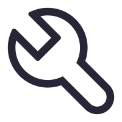

What is HEART?什么是 HEART？
HEART (Human-centric Ethical Audit & Revision Toolkit) is an interactive audit-and-repair toolkit for existing AI ethics benchmarks. Plug in a benchmark, run a 14-rubric diagnosis, get a tool-by-tool repair plan, and ship a better-evidenced revised version. Click any of the four stages below to drill in. HEART（Human-centric Ethical Audit & Revision Toolkit）是一套面向现有 AI 伦理 benchmark 的交互式审计与修复工具箱：丢进一个 benchmark，用 14 条 rubric 做诊断，得到逐项工具的修复处方，最后产出证据更充分的改编版。点击下方任一阶段进入。

T13Data sources数据来源
All data is loaded from JSON files under data/; nothing is generated at runtime. Expert labels are LLM-polished into short noun-phrase tags. All 103 benchmark entries (102 with public paper URLs) are synced from the canonical datasets/sources.md in the repo, which is the source of truth for paper / code / dataset-mirror links.
本站所有数据均从 data/ 下的 JSON 文件加载，无运行时生成。专家标签由 LLM 润色成 6–12 字的中文名词短语。全部 103 个 benchmark 条目（其中 102 个有公开 paper 链接）均与仓库根目录下的 datasets/sources.md 对齐——这是 paper / code / 数据集 mirror 链接的权威来源。